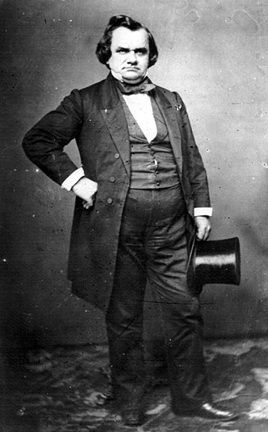

|

|

|
|
|
Lawyer and United States Senator, Stephen Arnold Douglas from
Illinois played a key role in the sectional politics that
led to the outbreak of the Civil War. Best known for his
famous debates against Abraham Lincoln in the 1858 Illinois
Senatorial contest and as Lincoln's opponent in the 1860
presidential race, Douglas was affectionately called the
"Little Giant" for his widely admired oratory skills, and
small stature. Douglas, considered the most talented
politician of his generation, saw his ambitions for higher
office destroyed in the bitter debates and violent struggle
between pro- and anti- slavery forces over the
Kansas-Nebraska territory. Douglas's failure to gain the
support of southern Democrats in 1860 split the party and
led to Republican Abraham Lincoln's victory.
Stephen Arnold Douglas was born on April 3, 1813 in
Brandon, Vermont, and a son of a doctor. Douglas enjoyed an
excellent education at the Canandaigua Academy in upstate
New York, where he moved with his family in 1830. There,
Douglas trained in the Latin and Greek classics that would
give his political speeches sparkle, spirit and a learned
quality. As a youth he was already endowed with the
remarkable energy and ambition that led a friend to describe
him as a "steam engine in breeches." After training in law,
Douglas moved west to Jacksonville, Illinois in 1833, where
he quickly proclaimed: "I have become a Western man."
At age 21, he entered state politics, rising to the state
supreme court by the age of twenty-seven. At court, he
earned and kept the nickname "Judge" Douglas. Hard working
and innovative, Douglas is credited with building the
Illinois Democratic Party from the bottom up. His hero was
Andrew Jackson, and he supported the principles of
Jacksonian democracy that stood for the betterment of the
common man. Douglas prospered in the tough world of frontier
politics. In 1843, he won the first of three terms in the
United States House. He was elected to the U.S. Senate in
1847 where he served until his death in 1861.
Douglas married a North Carolinian, Martha Martin in
1847. Martha was the heiress to a large plantation with 100
slaves that Douglas managed. Shortly after bearing two sons,
Martha died in 1853. The lonely widower remarried in 1856 to
the 21 year old Adele Cutts. They lived in Washington D.C.,
for most of the year. While in Congress, Douglas was a major
proponent of westward expansion and the idea of Manifest
Destiny. Leader of the "Young Democrat" movement, he was a
tough-minded politician who usually got his way.
After the end of the war with Mexico in 1848, the
settlement of the territories acquired from that war became
a controversial national issue. Should they be reserved for
free or slave labor? Douglas helped push through the
various pieces of legislation that made up the Compromise of
1850, including the completion of the Illinois Central
Railroad, his pet project. He was absent for the vote on
the controversial Fugitive Slave Act, but supported its
passage. As a Westerner, he promoted westward expansion,
negotiating the slavery issue to his constituents' benefit.
He was neither strongly proslavery nor anti-slavery, but his
position as chairman of the Senate Committee on Territories
put him in the middle of the coming political firestorm.
In 1854, Douglas promoted the idea of popular sovereignty
as a democratic method to decide the issue of expansion in
the Kansas and Nebraska Territories. Douglas's ultimate
goal was the building of a northern route for a
transcontinental railroad that would have to cross these
territories. He needed southern congressional support to
fund its construction. This need led to the passage of the
Kansas-Nebraska Act, which abolished the 1820 Missouri
Compromise (banning slavery in all territories north of the
36'30' parallel) and allowed the Kansas and Nebraska
territories to decide their status as either free or slave
territory via popular mandate.
Upon the passage of the Act, both free soil and
proslavery proponents flooded Kansas Territory in
anticipation of a vote on the territory's status. The
influx of a divided population led to the conflict known as
"Bleeding Kansas," which served as a preview to the Civil
War. The 1854 Act had many more effects than just local
conflict. It destroyed the last remnants of the Whig Party
and helped boost the popularity of the newly formed
Republican Party. The Act was so divisive and unpopular in
the North that Douglas joked that he could go from his home
in Washington D.C. to his home in Illinois by the light of
his burning effigies.
Controversy aside, Douglas commanded the loyalties of
many Democrats and only narrowly lost the 1856 presidential
nomination to James Buchanan. Buchanan and Douglas, however,
were increasingly at odds over Kansas' pro slavery Lecompton
Constitution. Their split reduced Douglas' influence with
southern Democrats that he hoped to recover in his Senate
reelection bid. In 1858, Republican lawyer Abraham Lincoln
challenged Douglas for his Senate seat. The famous
Lincoln-Douglas debates drew the entire nation's attention.
As the candidates "stumped" throughout the state, their
debates were followed closely because of the important
issues at stake and because Douglas was the leading
candidate for the Democratic Party's 1860 presidential
nomination.
The debates' focus was on slavery. Southerners were very
interested in what Douglas had to say. During his speech in
Freeport, Illinois, Douglas articulated his famous "Freeport
Doctrine." In it, Douglas sought to reassure Southerners
that he would not use federal power to stop slavery, while
at the same time pointedly informing Northerners that no
court, supreme or otherwise could impose slavery where it
was not wanted. He had a tough position to stake out,
because he could not win nationally without the support of
the pro slavery South, and he could not win a statewide
election without free labor votes. Ultimately, he failed to
persuade Southerners that northern Democrats would protect
their property, but he did win the election in Illinois.
Douglas' beloved Democratic Party had split in half by
the time the Democratic National Convention met in
Charleston, South Carolina in spring of 1860. With little
agreement between the north and southern wings, many
delegates from the slave states stormed out and the
convention adjourned without a candidate. Two months later,
a new Democratic Party convention was called in Baltimore,
and where Douglas won the party's nomination. The
convention did not attract delegates from the Deep South.
That group nominated John C. Breckenridge as their
Democratic candidate.
Douglas campaigned non-stop during the fall elections.
Unlike the other candidates, Douglas took his message to the
public. He toured New England and the Deep South, where he
was greeted with hostility. He message was simple and
straightforward: save the Union. No issue, he argued, even
slavery, should break up the country. It was too late for
that message to appeal to the voters. In the election,
Douglas won only Missouri outright, but collected the second
most popular votes, nearly 30 percent.
When hostilities broke out in April 1861, Stephen Douglas
stood firmly in support of President Lincoln and decried any
attempts at disunion. Just after Fort Sumter, Douglas made a
speech in which he said: "It is with a sad heart - with a
grief that I have never before experienced, that I have to
contemplate this fearful struggle." Months of tireless
campaigning had taken their toll on the "Little Giant," and
he died in a hotel room in Chicago on June 3, 1861.
Stephen A. Douglas was an important figure in United
States political history; and although a remarkably
intelligent and talented man, he never grasped fully the
power of the forces he unleashed when he signed the
Kansas-Nebraska Act into law. On his deathbed, he sent a
last message to his two sons: "Tell them to obey the laws
and support the Constitution of the United States."
Source: Joan Waugh, ed. Facts on File Encyclopedia of American
History: Civil War and Reconstruction, 1856 to 1869 (New York: Facts on
File, 2003), 97-99.
|